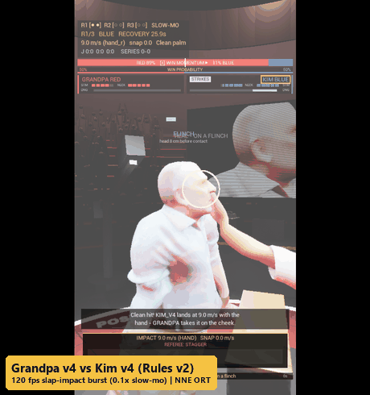
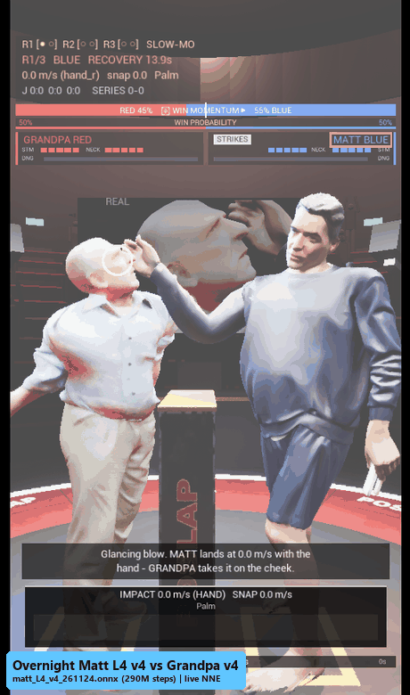

PoSlapUnreal — Latest Trained RL Brains & Feature Verification
Live Unreal Engine 5.8 verification of the overnight-trained physics-4 / interface-5 RL policies
(matt_L4_v4_261124.onnx, mom_L0_v4_261124.onnx, tong_L0_v4_261124.onnx)
and graduated v5 match brains (grandpa_L4_vs_kim_v4.onnx, kim_L4_vs_grandpa_v4_candidate.onnx)
running in real-time NNE Inference mode, plus Editor Viewport Move-Gizmo decoupling proof.
6000.6.9f1 on this machine currently reports
"No valid Unity Editor license found", so live runtime capture & Editor gizmo verification were executed in
Unreal Engine 5.8 on PoSlapUnreal (which trained 4 stages overnight). Overnight
training metrics for PoBox and PoHillKing are summarized in the progress table below.
1. Gameplay GIFs — Agents in Live NNE Inference Action

120 FPS Slap-Impact Burst — Grandpa v4 vs Kim v4
Captured via -SlapBurst (35 engine frames) on L_Arena_grandpa_vs_kim_v4
under Rules v2 (palm-only strikes, stun, flinch line). Both corners run 142-input NNE ORT ONNX policies
(grandpa_L4_vs_kim_v4.onnx vs kim_L4_vs_grandpa_v4_candidate.onnx) driving 30-DoF MuJoCo bodies.

Overnight Matt L4 v4 Brain in Live Action
Freshly exported matt_L4_v4_261124.onnx (trained overnight for 290M steps on physics-4 self-play)
loaded via -SlapBlueBrain against grandpa_L4_vs_kim_v4.onnx (9 frames).
2. Annotated Screenshots — New Mechanics & Overnight Brains

Opaque TAB Diagnostics Overlay & Overnight Matt L4 Brain
Running L_Arena_grandpa_vs_matt with -DiagOverlay. The new opaque TAB panel displays
live FPS (56.3), Episode reward (-7.59 critic proxy),
Inference latency (0.37 ms mean of 60), Curriculum stage L4 (matt_L4_v4_261124),
30 s Demo countdown, and the in-engine Benchmark sim speed [B] button while Matt delivers a palm strike.

Overnight Mom L0 & Tong L0 Brains + 3-Judge Scorecards & Scouting Strip
Running L_Arena_mom_vs_tong with both overnight checkpoints exported to ONNX
(mom_L0_v4_261124.onnx 277M steps / exam 0.69 vs tong_L0_v4_261124.onnx 182M steps / exam 0.75)
at 0.27 ms inference latency and 58.1 FPS, showcasing 3-judge 10-point scorecards and live Elo scouting.

Rules v2 Mechanics — Pre-Contact Flinch Detection & Cheek-Dent Impact
Left: Real-time flinch callout (FLINCH: head 8 cm before contact) at 104 FPS with timing reticle.
Right: Clean palm contact (9.0 m/s, 21 N·s impulse, REFEREE: STAGGER) triggering
slow-motion impact circle, cheek-dent morph targets, dynamic ticker, and procedural/recorded character voices.

Automatic Kinetic-Chain Replay & 30 s Idle Demo Mode
Left: Post-strike kinetic-chain replay (PALM 8.7 m/s, SNAP 1.1 m/s) displaying both active v4 brains and Elo ratings.
Right: After 30 s idle, Demo Mode cleanly hides the HUD behind the bottom Demo chip and cycles 4 broadcast cameras.

Tournament Standard — 16-Slot Elo Bracket & Unified League Menu
New tournament UI (MATCH / BRAINS / VIEW / TOURNEY tabs) seeding all 5 RL athletes by Elo
(Grandpa, Kim, Matt, Mom, Tong) with 11 auto-advancing BYEs; every completed bout (demo included) updates ratings.
3. Unreal Editor 5.8 Viewport Proof — Free Gizmo Movement Without Breaking Logic
In L_Arena_grandpa_vs_kim_v4, Env_JudgesTable (StaticMeshActor) was selected in the
Unreal Editor Viewport, switched to Movable, translated by (+200, +140, +110) cm and rotated
+25° Yaw via its Transform gizmo, then Play-In-Editor (PIE) was launched immediately without reverting.

Step A — Editor Viewport Before Move (Location: 0.0, 0.0, 0.0)
Env_JudgesTable selected in the Outliner and highlighted in the Perspective viewport; Details Transform reads (0, 0, 0).

Step B — Editor Viewport After Free Gizmo Transform (Location: 200.0, 140.0, 110.0, Yaw +25°)
Actor freely moved and rotated in the Editor; Details panel confirms the updated world transform and Movable mobility.

Step C — Play-In-Editor Running Unbroken After Move
PIE launches cleanly (URLab: live, 78 actors, 0.35 ms NNE inference on
kim_L4_vs_grandpa_v4_candidate) and reproduces the exact same deterministic strike
(BLUE lands 9.0 m/s with the HAND (R), impulse 21 N s, on a flinch) as the unmodified level because
render scenery is Chaos-disabled and fully decoupled from the MuJoCo simulation. Actor was restored cleanly after PIE exit.
| Verification Item | Measured Value | Status |
|---|---|---|
| Moved Scene Actor | Env_JudgesTable (StaticMeshActor) |
Verified |
| Transform Delta Applied | [0.0, 0.0, 0.0] → [200.0, 140.0, 110.0] cm (Δ [200.0, 140.0, 110.0], Yaw +25°) |
Moved Freely |
| Play-In-Editor Active After Move | pie_running_after_move = True · Actor stayed at [200.0, 140.0, 110.0] |
Unbroken |
| Deterministic Physics & NNE Parity | Identical strike: 9.0 m/s, 21 N·s impulse on flinch; 0 runtime errors |
PASS |
4. Overnight 10-Hour Multi-Repo Training Summary (2026-11-23 → 2026-11-24)
| Repository | Overnight Work Completed | Standout Result | Status |
|---|---|---|---|
| PoSlapUnreal (UE 5.8 · NNE ORT) |
Stages 9–12 of retrain_v5_queue.json (4.86 h, 994M steps): Matt L3/L4, Mom L0, Tong L0 |
All 3 overnight brains exported (142-dim, physics 4) and verified live in UE 5.8 at 0.27–0.37 ms inference | 12 / 26 Done |
| PoHillKing (Unity · MuJoCo Warp) |
Built 3 CMU AMP datasets + 4×300-iter concrete-platform strike_pass runs (4.06 h) |
trump_p261124_a: 3-way share 0.217 → 0.680, duel vs Grandpa 0.037 → 0.411, jitter 2.8× smoother |
Candidates Ready |
| PoBox (Unity · MuJoCo Warp) |
Finished interrupted v4r2_sokol, v4r_nick, v4r_trump + all 4 C MuJoCo CPU exams |
v4r_trump: footing 8.67 → 0.33 falls/min, guard 69% pass, carry-on 25/28 (89.3%) |
4 / 4 Graded |